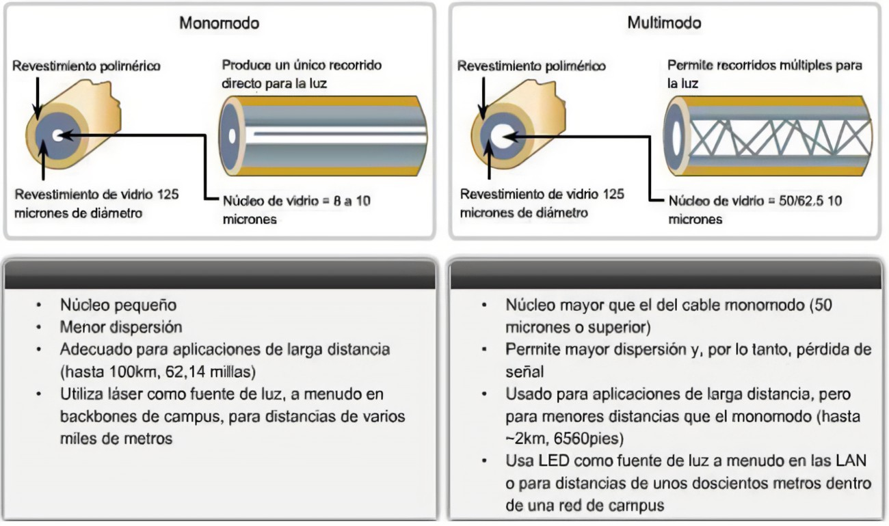

Los dos tipos básicos de fibra son multimodo y monomodo. En estas categorías, las fibras se identifican por los diámetros de su núcleo y de su revestimiento (cladding) expresados en micrones (la mil millonésima parte de un metro), por ejemplo, fibra multimodo de 50/125 micrones.
La mayoría de las fibras tienen 125 micrones de diámetro exterior (un micrón es la millonésima parte de un metro, y 125 micrones equivalen a 0.0127 centímetros) apenas un poco más grandes que un cabello humano.
En el núcleo de la fibra multimodo, los rayos de luz viajan en muchas direcciones, las que se denominan modos; posee un núcleo mayor (generalmente de 50 o 62.5 micrones) lo que soporta la transmisión de múltiples modos (rayos) de luz. Generalmente, la fibra multimodo se utiliza con fuentes LED en longitudes de onda de 850 y 1300 nm (ver debajo) para redes de área local (LAN) más lentas y con fuentes láser a 850 nm (VCSEL) y 1310 nm (láser Fabry-Perroy) para redes que operan a velocidades de gigabits por segundo o mayores.
La fibra monomodo posee un núcleo mucho más pequeño, de solamente 9 micrones aproximadamente, por lo que la luz viaja en un sólo modo (rayo); se utiliza para telefonía y para televisión por cable (CATV) con fuentes de luz láser a 1300 y 1550 nm ya que tiene poca pérdida y un ancho de banda prácticamente infinito.
La fibra óptica de plástico (POF) posee un gran núcleo (aproximadamente de 1mm), generalmente es de índice escalonado, y puede utilizarse para redes de distancia corta y de baja velocidad.
Las fibras de sílice con revestimiento rígido o de plástico, revestimiento de plástico sobre núcleo de vidrio (HCS/PCS) poseen un núcleo de vidrio más pequeño (200 micrones aproximadamente) y un revestimiento de plástico fino.
Las fibras multimodo de índice escalonado fueron las primeras en diseñarse. El núcleo de este tipo de fibra está realizado con un tipo de material óptico y el revestimiento (cladding) con otro tipo de material con características ópticas diferentes. Estas fibras tienen mayor atenuación y la información que viaja a través de ellas lo hace de forma demasiado lenta, por lo que no son útiles para muchas aplicaciones debido a la dispersión causada por las diferentes distancias que recorren los diferentes modos a través del núcleo. Las fibras de índice escalonado se utilizan muy poco; sólo las fibras de plástico (POF) y las de sílice con revestimiento rígido o de plástico, de revestimiento de plástico sobre núcleo de vidrio (PCS/HCS) utilizan el diseño de índice escalonado hoy en día. La fibra de plástico (POF) se utiliza principalmente para transmisiones de audio y de televisión.
Las fibras multimodo de índice gradual utilizan variaciones en la composición del vidrio del núcleo para compensar las diferentes longitudes de las trayectorias de los modos; ofrecen un ancho de banda cientos de veces mayor que la fibra de índice escalonado, hasta 2 gigahertz aproximadamente; se utilizan dos tipos, de 50/25 y de 62.5/125, en dónde los números representan los diámetros del núcleo y del revestimiento (cladding) en micrones, respectivamente. La fibra multimodo de índice gradual se utiliza principalmente para redes en planta interna, de área local, de fibra hasta el escritorio, de CCTV y de otros sistemas de seguridad.
La fibra monomodo tiene un núcleo tan pequeño que la luz puede viajar solamente en un haz, esto aumenta el ancho de banda hasta hacerlo casi infinito, pero está prácticamente limitado a 100,000 gigahertz, ¡que aún es mucho! El núcleo de la fibra monomodo mide entre 8 y 10 micrones, y se lo conoce como "diámetro de campo modal", es decir, el tamaño efectivo del núcleo; y un revestimiento (cladding) de 125 micrones de diámetro. La fibra monomodo se utiliza para redes en planta externa como por ejemplo, redes de telecomunicaciones, de FTTH, de televisión por cable, municipales y enlaces de datos de larga distancia como las de gestión de redes de servicios públicos. Algunas redes troncales (backbones) de alta velocidad, generalmente a nivel campus, utilizan fibras monomodo.
Existen tipos de fibra especiales que se han desarrollado para aplicaciones que requieren especificaciones únicas de rendimiento de la fibra. Tanto las fibras multimodo como las monomodo insensibles a curvaturas se utilizan para cables de conexión (patchcords) y para fibras contenidas en cierres de empalme con poco espacio. Las fibras monomodo dopadas con erbio se utilizan en amplificadores ópticos, es decir, dispositivos utilizados en redes de distancias extremadamente largas para regenerar señales. Las fibras son optimizadas para ancho de banda en longitudes de onda apropiadas para sistemas de multiplexación por división de longitud de onda densa (DWDM) o para revertir la dispersión cromática; esta es un área de desarrollo de fibra en donde hay mucha actividad.